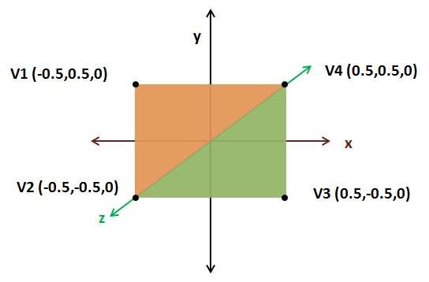
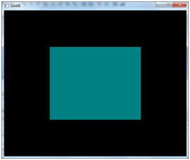
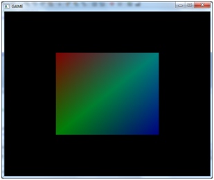

渲染补充（More on Rendering）
本章我们将继续讲述OpenGL如何渲染物体。为了整理代码，我们要创建一个名为Mesh的新类，把一个位置数组作为输入，为需要加载到显卡中的模型创建VBO和VAO对象。
package org.lwjglb.engine.graph;
import java.nio.FloatBuffer;
import org.lwjgl.system.MemoryUtil;
import static org.lwjgl.opengl.GL30.*;
public class Mesh {
private final int vaoId;
private final int vboId;
private final int vertexCount;
public Mesh(float[] positions) {
FloatBuffer verticesBuffer = null;
try {
verticesBuffer = MemoryUtil.memAllocFloat(positions.length);
vertexCount = positions.length / 3;
verticesBuffer.put(positions).flip();
vaoId = glGenVertexArrays();
glBindVertexArray(vaoId);
vboId = glGenBuffers();
glBindBuffer(GL_ARRAY_BUFFER, vboId);
glBufferData(GL_ARRAY_BUFFER, verticesBuffer, GL_STATIC_DRAW);
glVertexAttribPointer(0, 3, GL_FLOAT, false, 0, 0);
glBindBuffer(GL_ARRAY_BUFFER, 0);
glBindVertexArray(0);
} finally {
if (verticesBuffer != null) {
MemoryUtil.memFree(verticesBuffer);
}
}
}
public int getVaoId() {
return vaoId;
}
public int getVertexCount() {
return vertexCount;
}
public void cleanUp() {
glDisableVertexAttribArray(0);
// 删除VBO
glBindBuffer(GL_ARRAY_BUFFER, 0);
glDeleteBuffers(vboId);
// 删除VAO
glBindVertexArray(0);
glDeleteVertexArrays(vaoId);
}
}
我们将在DummyGame类中实例化Mesh，然后将Renderer的init方法中的VAO和VBO代码删除。在Renderer类的渲染方法中将接收一个Mesh对象来渲染。cleanup方法也被简化，因为Mesh类已经提供了一个释放VAO和VBO资源的方法。
public void render(Mesh mesh) {
clear();
if ( window.isResized() ) {
glViewport(0, 0, window.getWidth(), window.getHeight());
window.setResized(false);
}
shaderProgram.bind();
// 绘制
glBindVertexArray(mesh.getVaoId());
glEnableVertexAttribArray(0);
glDrawArrays(GL_TRIANGLES, 0, mesh.getVertexCount());
// 还原状态
glDisableVertexAttribArray(0);
glBindVertexArray(0);
shaderProgram.unbind();
}
public void cleanup() {
if (shaderProgram != null) {
shaderProgram.cleanup();
}
}
值得注意的一点是：
glDrawArrays(GL_TRIANGLES, 0, mesh.getVertexCount());
Mesh类通过将位置数组除以3来计算顶点的数目（因为我们使用X，Y和Z坐标）。现在，我们可以渲染更复杂的形状。来试试渲染一个四边形，一个四边形可以用两个三角形来组成，如图所示：

如你所见，这两个三角形中的每一个都由三个顶点组成。第一个三角形由顶点V1、V2和V4（橙色的点）组成，第二个三角形由顶点V4，V2和V3（绿色的点）组成。顶点以逆时针顺序连接，因此要传递的浮点数数组应该是[V1, V2, V4, V4, V2, V3]。因此，DummyGame的init方法将是这样的：
@Override
public void init() throws Exception {
renderer.init();
float[] positions = new float[]{
-0.5f, 0.5f, 0.0f,
-0.5f, -0.5f, 0.0f,
0.5f, 0.5f, 0.0f,
0.5f, 0.5f, 0.0f,
-0.5f, -0.5f, 0.0f,
0.5f, -0.5f, 0.0f,
};
mesh = new Mesh(positions);
}
现在你应该可以看到这样的一个四边形：

我们做完了吗？并没有，上述代码仍存在一些问题。我们使用了重复的坐标来表示四边形，传递了两次V2和V4坐标。这是个小图形，它可能不是什么大问题，但想象在一个更复杂的3D模型中，我们会多次重复传递坐标。记住，我们使用三个浮点数表示顶点的位置，但此后将需要更多的数据来表示纹理等。考虑到在更复杂的形状中，三角形直接共享的顶点数量甚至更高，如图所示（其顶点可以在六个三角形之间共享）：

最后，我们需要更多的内存来储存重复的数据，这就是索引缓冲区（Index Buffer）大显身手的时候。为了绘制四边形，我们只需要以这样的方式指定每个顶点：V1, V2, V3, V4。每个顶点在数组中都有一个位置。V1在位置0上，V2在位置1上，等等：
| V1 | V2 | V3 | V4 |
|---|---|---|---|
| 0 | 1 | 2 | 3 |
然后，我们通过引用它们的位置来指定这些顶点的顺序：
| 0 | 1 | 3 | 3 | 1 | 2 |
|---|---|---|---|---|---|
| V1 | V2 | V4 | V4 | V2 | V3 |
因此，我们需要修改Mesh类来接收另一个参数，一个索引数组，现在绘制的顶点数量是该索引数组的长度。
public Mesh(float[] positions, int[] indices) {
vertexCount = indices.length;
在创建了储存位置的VBO之后，我们需要创建另一个VBO来储存索引。因此，重命名储存位置的VBO的ID的变量名，并为索引VBO（idxVboId）创建一个ID。创建VBO的过程相似，但现在的类型是GL_ELEMENT_ARRAY_BUFFER。
idxVboId = glGenBuffers();
indicesBuffer = MemoryUtil.memAllocInt(indices.length);
indicesBuffer.put(indices).flip();
glBindBuffer(GL_ELEMENT_ARRAY_BUFFER, idxVboId);
glBufferData(GL_ELEMENT_ARRAY_BUFFER, indicesBuffer, GL_STATIC_DRAW);
memFree(indicesBuffer);
因为我们是在处理整数，所以需要创建一个IntBuffer而不是一个FloatBuffer。
就是这样。现在VAO包含两个VBO，一个储存位置，另一个储存索引。Mesh类的cleanUp方法也必须考虑到要释放另一个VBO。
public void cleanUp() {
glDisableVertexAttribArray(0);
// 删除 VBO
glBindBuffer(GL_ARRAY_BUFFER, 0);
glDeleteBuffers(posVboId);
glDeleteBuffers(idxVboId);
// 删除 VAO
glBindVertexArray(0);
glDeleteVertexArrays(vaoId);
}
最后，我们需要修改在绘制时调用的glDrawArrays方法：
glDrawArrays(GL_TRIANGLES, 0, mesh.getVertexCount());
改为调用glDrawElements方法：
glDrawElements(GL_TRIANGLES, mesh.getVertexCount(), GL_UNSIGNED_INT, 0);
方法的参数如下： mode: 指定渲染的图元类型，现在是三角形，没有变化。 count: 指定要渲染的顶点数。 type: 指定索引数据的类型，现在是无符号整数型。 indices: 指定要开始使用索引渲染的数据偏移量。
现在可以使用全新和更有效的方法来绘制复杂的模型了，仅需指定索引。
public void init() throws Exception {
renderer.init();
float[] positions = new float[]{
-0.5f, 0.5f, 0.0f,
-0.5f, -0.5f, 0.0f,
0.5f, -0.5f, 0.0f,
0.5f, 0.5f, 0.0f,
};
int[] indices = new int[]{
0, 1, 3, 3, 1, 2,
};
mesh = new Mesh(positions, indices);
}
现在为示例代码添加颜色吧。我们把另一组浮点数传递给Mesh类，它储存了四边形中每个顶点的颜色。
public Mesh(float[] positions, float[] colours, int[] indices) {
为了使用该数组，我们需要创建另一个VBO，它将与我们的VAO相关联。
// 颜色 VBO
colourVboId = glGenBuffers();
FloatBuffer colourBuffer = memAllocFloat(colours.length);
colourBuffer.put(colours).flip();
glBindBuffer(GL_ARRAY_BUFFER, colourVboId);
glBufferData(GL_ARRAY_BUFFER, colourBuffer, GL_STATIC_DRAW);
memFree(colourBuffer);
glVertexAttribPointer(1, 3, GL_FLOAT, false, 0, 0);
请注意glVertexAttribPointer方法的调用，第一个参数现在是“1”，这是着色器期望数据的位置。当然，因为增加了一个VBO，所以我们需要在cleanUp方法中释放它。
接下来是修改着色器。顶点着色器现在需要两个参数，坐标（位置0）和颜色（位置1）。顶点着色器将只输出接收到的颜色，以便片元着色器可以对其进行处理。
#version 330
layout (location=0) in vec3 position;
layout (location=1) in vec3 inColour;
out vec3 exColour;
void main()
{
gl_Position = vec4(position, 1.0);
exColour = inColour;
}
现在，片元着色器接收由顶点着色器处理的颜色，并使用它来生成颜色。
#version 330
in vec3 exColour;
out vec4 fragColor;
void main()
{
fragColor = vec4(exColour, 1.0);
}
最后要做的是修改渲染代码以使用第二个数据数组：
public void render(Window window, Mesh mesh) {
clear();
if ( window.isResized() ) {
glViewport(0, 0, window.getWidth(), window.getHeight());
window.setResized(false);
}
shaderProgram.bind();
// 绘制网格
glBindVertexArray(mesh.getVaoId());
glEnableVertexAttribArray(0);
glEnableVertexAttribArray(1);
glDrawElements(GL_TRIANGLES, mesh.getVertexCount(), GL_UNSIGNED_INT, 0);
// ...
在渲染过程中，你可以看到我们需要启用位于位置1的VAO属性。现在可以将如下所示颜色数组传给Mesh类，给四边形添加点颜色。
float[] colours = new float[]{
0.5f, 0.0f, 0.0f,
0.0f, 0.5f, 0.0f,
0.0f, 0.0f, 0.5f,
0.0f, 0.5f, 0.5f,
};
然后会得到一个色彩鲜艳的四边形。
